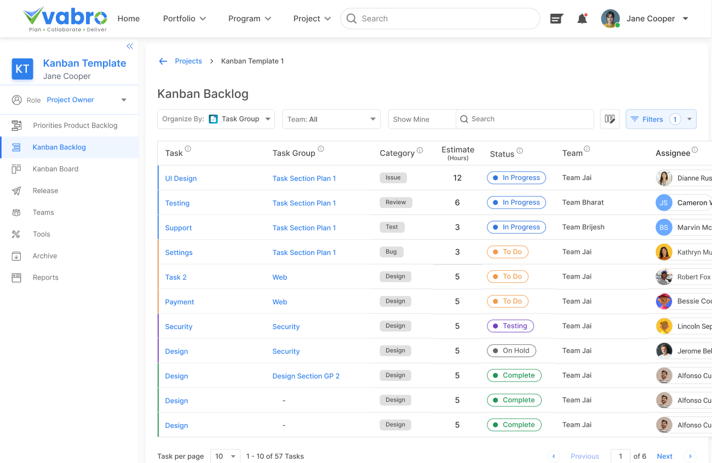

Do you ever feel overwhelmed with work getting assigned to you without consent? Vabro supports a bottoms-up approach and introduces an approval process for work assignments by looking at the individual's bandwidth. Unlike other tools which offer a top-down approach, Vabro puts decision-making power in the hands of individuals to balance workloads effectively.
Truly Agile to Increase ROI
Work assignments to Team members need consent

Aligns with Scrum framework for Projects
Are you struggling to implement Scrum framework effectively in your Projects? Vabro solves this by aligning seamlessly with Scrum principles, aspects, and processes, offering pre-defined roles such as Product Owner, Scrum Master, and Scrum Team Members, maintaining a fully Prioritized Product Backlog, organizing User Stories and Tasks into structured Sprints, and planning Product Releases. No other tools provide predefined Scrum roles and the above features for seamless Project execution within the Scrum framework.
Aligns with Kanban framework for Workflows

Finding it challenging to implement the Kanban framework in your Workflow? Vabro streamlines the process with predefined roles like Product Owner, Kanban Manager and Kanban Team Member, ensuring Tasks flow seamlessly across visual boards. Unlike other tools, Vabro offers ready-made Kanban roles and processes for hassle-free Workflow setup and management.
Supports DevOps
Struggling to keep your Dev and Ops teams together and unable to integrate DevOps practices smoothly into your Projects? With Vabro, you can easily integrate DevOps, ensuring smooth collaboration, continuous integration, and efficient delivery pipelines. Unlike other tools that charge additional $10 - $15 for DevOps support, Vabro offers everything in a single plan.
Supports Goals, Objectives, and KeyResults (OKRs)
Is your company unable to set clear Goals/Objectives and break them down into Key Results by linking them to the work done by individual teams and users? Vabro offers a structured OKR approach, breaking Goals into Key Results and cascading them to Projects and Workflows with customized weightage, ensuring measurable outcomes – this helps align the work of all teams inside the company and measure their contribution to the overall business objectives. Unlike other tools that charge additional $5 - $10 to include OKRs functionality, Vabro integrates OKRs seamlessly without extra charges or complexity, helping teams stay aligned and achieve goals efficiently.
Easy Set-up for Agile Frameworks
Struggling with how to quickly set up your organization to work efficiently with Agile Frameworks?? Vabro offers pre-defined roles based on Agile frameworks such as Product Owner, Scrum Master, and Kanban Manager, ensuring best practices and improved collaboration. 1500+ Vabro Genie AI templates (vetted by industry experts) are available for 13+ solutions such as IT, HR, Sales, Marketing, Customer Service, Finance, Learning and Development, Legal and Compliance, Operations, Product Management, Strategy, Design and Project Management. Unlike other tools, Vabro simplifies team setup and accelerates Agile adoption, boosting productivity and improving ROI for all your work.
Planning Poker
Struggling with manually estimating your work such as Epics, User Stories and Tasks? Vabro offers an in-built Planning Poker tool, a collaborative Estimation technique that helps teams assess effort and complexity through consensus, promoting transparency and shared decision-making. Unlike other tools that charge $5 - $10 for such features, Vabro provides it for free, simplifying the estimation process and boosting